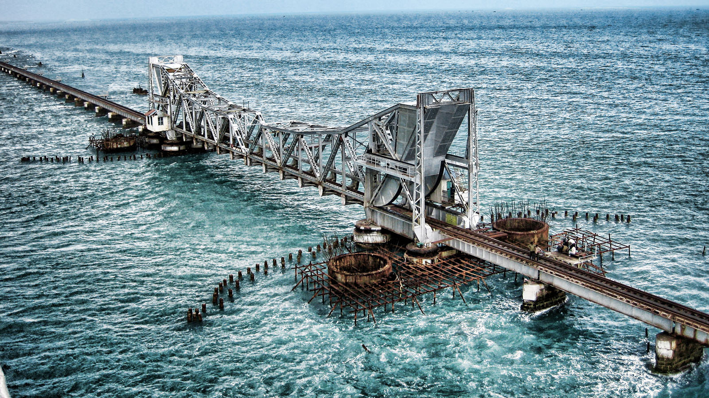

NAME : rameshwaram

Rameswaram, (also spelt as Ramesvaram, Rameshwaram) is a town and a second grade
municipality in the Ramanathapuram district in the South Indian state of Tamil Nadu. It is located on Pamban Island separated
from mainland India by the Pamban channel and is about 40 kilometres from Mannar Island, Sri Lanka. It is situated in the Gulf of Mannar, at the very tip of the Indian peninsula.[1] Pamban Island, also known as Rameswaram Island, is connected to mainland India by the Pamban Bridge. Ra
meswaram is the terminus of the railway line from Chennai and Madur

HOW TO REACH ?
Nearest Airport: rameshwaram
Nearest Railway Station:rameshwaram
Nearest Bus Stand: rameshwaram